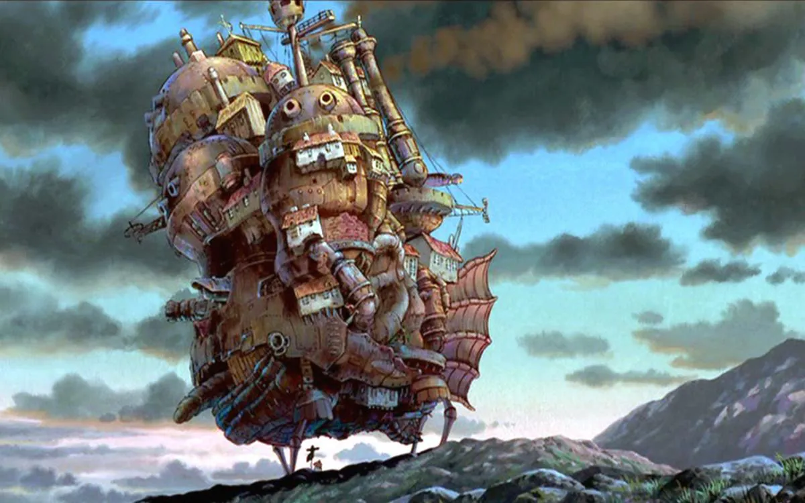

El Castillo Ambulante

Personajes
A continuación se describe brevemente algunos de los personajes más destacados de la película:
- Sophie Hatter Es una joven de dieciocho años que trabaja en una sombrerería. Es víctima de una maldición por parte de la Bruja del Páramo que le hace tener la apariencia de una mujer de noventa años. De carácter tímido y cerrado, tendrá que enfrentarse a sí misma para poder romper el maleficio que se ha desatado sobre ella y ayudar a Howl. En la adaptación japonesa su seiyū (actor de voz) es Chieko Baishō.
- Howl Jenkins PendragonEs el amo y señor del castillo ambulante. Es un mago dotado de un poder inmesurable del que se cuentan varias leyendas, entre ellas que se dedica a robar el corazón de mujeres jóvenes y bellas. De apariencia joven y energética, rechaza la invitación del rey de unirse a la guerra puesto que vive sus días con despreocupación y sin objetivos. En realidad, aborrece la guerra y por ende trata de sabotear las naves de guerra de ambos bandos para así evitar la masacre de inocentes, a costa de perder su propia humanidad. En la adaptación japonesa su seiyū es Takuya Kimura.
- Bruja del Páramo Es una malvada bruja que persigue a Howl para adueñarse de su corazón. De acuerdo con Howl, la Bruja del Páramo alguna vez fue una bella mujer, motivo por el cual se acercó a ella, pero terminó huyendo al ver cómo era realmente. Desde ese entonces, la bruja lo ha estado persiguiendo. También solía ser la bruja de la Casa Real de Kingsbury, pero fue expulsada cincuenta años atrás por Madame Suliman y eligió el Páramo para vivir, de ahí su nombre. Es la responsable del maleficio que atormenta a Sophie, y tiene a su mando hombres de lodo. En la adaptación japonesa su seiyū es Akihiro Miwa.
- Markl Es el joven discípulo de Howl. Es huérfano y se encarga de recibir a los visitantes que llegan al castillo para ver al mago o a los enviados del rey que portan cartas de invitación. En la adaptación japonesa su seiyū es Ryūnosuke Kamiki.
- CalciferEs un demonio de fuego, encargado de mantener la energía del castillo ambulante. Irónico y bromista, promete ayudar a Sophie a condición de que esta le ayude a él. En la adaptación japonesa su seiyū es Tatsuya Gashūin.
- NaboUn espantapájaros que siempre intenta ayudar a Sophie. Hace honor a su nombre al tener un nabo como cabeza. En realidad, éste resulta ser el príncipe Justin, del reino vecino, quien había sido hechizado y cuya desaparición había sido la causa de la guerra. En la adaptación japonesa su seiyū es Yō Ōizumi.